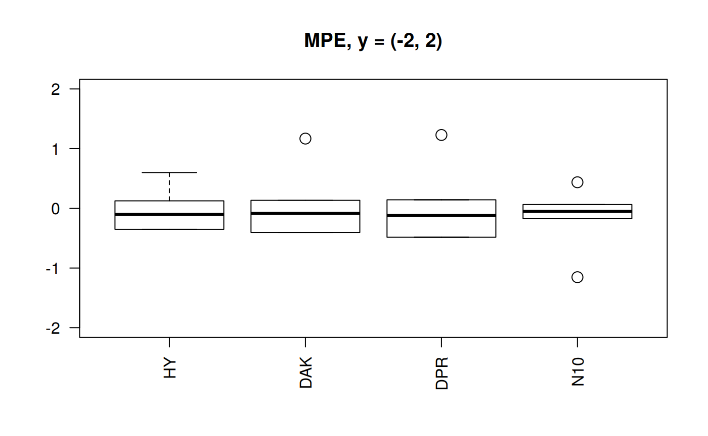

Selecting the Best Correlation
2019-08-01
Source:vignettes/correlation_selection.Rmd
correlation_selection.RmdIf after seeing the heatmaps that show the best and worst areas of applicability of any of the correlation does not convince you, I am showing a diiferent way of visualizing the correlations.
This time I am using all the statistical variables from the table generated by z.stats for the Hall-Yarborough correlation:
## # A tibble: 112 x 11
## Tpr Ppr z.chart z.calc RMSE MPE MAPE MSE RSS
## <chr> <dbl> <dbl> <dbl> <dbl> <dbl> <dbl> <dbl> <dbl>
## 1 1.05 0.5 0.829 0.832 0.00347 -0.418 0.418 1.20e-5 1.20e-5
## 2 1.05 1.5 0.253 0.310 0.0569 -22.5 22.5 3.24e-3 3.24e-3
## 3 1.05 2.5 0.343 0.384 0.0415 -12.1 12.1 1.72e-3 1.72e-3
## 4 1.05 3.5 0.471 0.500 0.0286 -6.08 6.08 8.19e-4 8.19e-4
## 5 1.05 4.5 0.598 0.615 0.0171 -2.86 2.86 2.92e-4 2.92e-4
## 6 1.05 5.5 0.727 0.729 0.00210 -0.289 0.289 4.42e-6 4.42e-6
## 7 1.05 6.5 0.846 0.842 0.00447 0.528 0.528 2.00e-5 2.00e-5
## 8 1.1 0.5 0.854 0.857 0.00250 -0.293 0.293 6.27e-6 6.27e-6
## 9 1.1 1.5 0.426 0.473 0.0472 -11.1 11.1 2.23e-3 2.23e-3
## 10 1.1 2.5 0.393 0.414 0.0209 -5.31 5.31 4.35e-4 4.35e-4
## # … with 102 more rows, and 2 more variables: MAE <dbl>, MAAPE <dbl>We could use another function of zFactor to calculate the statistics of the statical variable for all correlations, in this case the Mean Absolute Percentage Error.
## BB HY DAK DPR SH
## mean 13.8862628 0.818657798 0.769721132 0.81237862 4.1530402
## max 554.1872335 22.481448009 12.777908779 12.96594664 30.3942954
## min 0.0153618 0.002422012 0.000609287 0.02057809 0.0231023
## median 1.0402029 0.220154744 0.245336341 0.26714131 1.1092930
## Mode 0.4281138 0.418077023 0.128870880 0.11769033 0.4389189
## N10 PP
## mean 0.163515716 2.098729377
## max 1.153159851 85.482666496
## min 0.007209524 0.000507908
## median 0.123437923 0.670820910
## Mode 0.419773370 0.559623816The inconvenience here is that these statiscal function may not be able easy to interpret. We could try instead applying quantile to all the statistical variables to all the correlation and then show a boxplot.
Now, what if we take t
We use this time the function z.stats_quantile
Boxplots for MPE at different y scale
library(zFactor)
qcorrs <- z.stats_quantile("MPE")
# par(mfrow = c(1,3))
boxplot(qcorrs, ylim= c(-600, 100), cex = 1.5, las=2, main = "MPE, y = (-4, 100)")
grid()

Boxplots for four statistical indicators for all correlations
library(zFactor)
qcorrs <- z.stats_quantile("RMSE")
# op <- par(mfrow = c(1,4))
boxplot(qcorrs, log = "y", ylim = c(1e-6, 1e3), las=2, main = "RMSE")
grid()qcorrs <- z.stats_quantile("MAPE")
boxplot(qcorrs, log = "y", ylim = c(1e-6, 1e3), las=2, main = "MAPE")
grid()qcorrs <- z.stats_quantile("MSE")
boxplot(qcorrs, log = "y", ylim = c(1e-12, 1e3), las=2, main = "MSE")
grid()qcorrs <- z.stats_quantile("RSS")
boxplot(qcorrs, log = "y", ylim = c(1e-12, 1e3), las=2, main = "RSS")
grid()
What we find out here is that four of the correlations show plenty of variation. The trends are similars since the statistical function originate from the sequare of the error.
But this still could not help us for the selection. Let’s try another angle. But focusing on one statistical measurement: Mean Percentage Error.
Boxplots for MPE at different y scale
The MPE is the only statistic indicator that will show negative values. So, we could appreciate the dispersion. Let’s plot the MPE for all the correlations.
library(zFactor)
qcorrs <- z.stats_quantile("MPE")
# par(mfrow = c(1,3))
boxplot(qcorrs, ylim= c(-600, 100), cex = 1.5, las=2, main = "MPE, y = (-4, 100)")
grid()

Boxplots of MPE for selected correlations
From the previous plots we may start discarding Beggs-Brill (MPE values go as far as -550%). Another one -observed in the scale (-4,100) could be Papp (their MPE go as far as +98%).
In the plot of the center help us to eliminate the Shell correlation since it has MPE of above 30%.
We are left with Hall-Yarborough (HY), Dranchuk-ABouKassem (DAK), Dranchuk-Purvis-Robinson (DPR) and Neural-Network-10 (N10). Let’s see them closer.
library(zFactor)
qcorrs <- z.stats_quantile("MPE")
scorrs <- qcorrs[, c("HY", "DAK", "DPR", "N10")]
# par(mfrow = c(1,2))
boxplot(scorrs, ylim= c(-2, 25), cex = 1.5, las=2, main = "MPE, y = (-2, 25)")
grid()

Still N10 is the correlation with less dispersion of the MPE. But any other three are still acceptable. DAK better than HY.
If you are uncomfortable with the results of the neural network correlation, there is still a backup correlation to go to DAK. There is this little problem: neural network results are too good. But there is no physics and no experiment behind.
This leaves a lesson: